expEYES-17
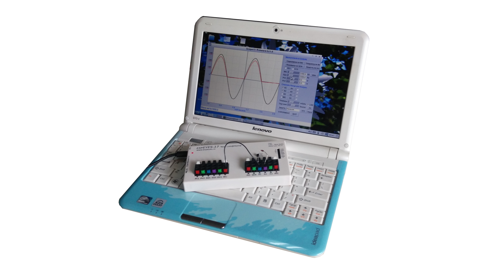
Manuel Utilisateur
Expériences pour
Jeunes Ingénieurs et Scientifiques
Jeunes Ingénieurs et Scientifiques
http://expeyes.in
du
Projet PHOENIX
Inter-University Accelerator Centre
(centre de recherche de l’UGC)
New Delhi 110 067
www.iuac.res.in
Inter-University Accelerator Centre
(centre de recherche de l’UGC)
New Delhi 110 067
www.iuac.res.in
Préface
Le projet PHOENIX (Physics with Home-made Equipment & Innovative Experiments : Physique avec un matériel « maison » & des expériences innovantes) a démarré en 2004 au Inter-University Accelerator Centre avec l’objectif d’améliorer l’enseignement des sciences dans les Universités Indiennes. Le développement de matériel de laboratoire à bas coût et la formation des enseignants sont les deux activités principales de ce projet.
expEYES-17 est une version avancée du expEYES publié plus tôt. Il est conçu pour être un outil d’apprentissage par l’exploration, valide pour les classes de lycée et au-dessus. Nous avons essayé d’optimiser la conception pour la rendre simple, flexible, robuste et bon marché. Le prix bas le rend accessible aux individus et nous espérons voir des étudiants réaliser des expériences en dehors des quatre murs du laboratoire, qui ferme à la sonnerie de la cloche.
Ce logiciel est publié sous les licences GNU General Public License et CERN Open Hardware Licence. Le projet a avancé grâce aux participations actives et contributions de la communauté des utilisateurs et de plusieurs autres personnes en dehors de l’IUAC. Nous remercions le Dr D Kanjilal pour les étapes nécessaires à l’élaboration de cette nouvelle version à partir du travail de son développeur, Jithin B P, de CSpark Research.
Le manuel utilisateur de expEYES-17 est distribué sous la licence GNU Free Documentation.
Ajith Kumar B.P. (ajith@iuac.res.in) http://expeyes.in
V V V Satyanarayana
Table des matières
1 Pour commencer
1.1 Introduction
La science est l’étude du monde physique par des observations systématiques et des expériences. Une bonne éducation scientifique est essentielle pour cultiver une société où le raisonnement et la pensée logique prévalent au lieu de la superstition et des croyances irrationnelles. L’éducation scientifique est aussi essentielle pour former suffisamment de techniciens, d’ingénieurs et de scientifiques pour l’économie du monde moderne. On admet largement que l’expérience personnelle issue d’expérimentations et d’observations réalisées soit par les étudiants, soit par des enseignants à titre de démonstration, soit essentielle à la pédagogie de la science. Cependant, presque partout la science est enseignée en grande partie à partir de livres de cours sans donner d’importance à l’expérimentation, en partie à cause du manque d’équipements. Sans surprise, la plupart des étudiants échouent à corréler leurs connaissance acquise en classe aux problèmes rencontrés dans la vie quotidienne. On peut jusqu’à un certain point corriger cela en enseignant la science à l’aide de questionnements et d’expériences.
L’avènement des ordinateurs personnels et leur banalisation a ouvert une nouvelle voie pour faire des expériences de laboratoire. L’ajout d’un peu de matériel à un ordinateur ordinaire peut le convertir en un laboratoire de sciences. Réaliser des mesures rapides avec une bonne précision autorise l’étude une large palette de phénomènes. Les expériences scientifiques impliquent en général la mesure et le contrôle de certains paramètres physiques comme la température, la pression, la vitesse, l’accélération, la force, la tension, le courant, etc. Si la grandeur physique étudiée évolue rapidement, il faut automatiser la mesure et un ordinateur devient utile. Par exemple, comprendre la variation de la tension alternative du secteur nécessite de la mesurer à chaque milliseconde.
La possibilité de réaliser des expériences avec une précision raisonnable ouvre aussi la possibilité d’une éducation scientifique orientée sur la recherche. Les étudiants peuvent comparer les données expérimentales avec des modèles mathématiques et examiner les lois fondamentales qui régissent de nombreux phénomènes. Le kit expEYES ( expEriments for Young Engineers & Scientists) est conçu pour permettre une grande variété d’expériences, de l’école à l’université. Il est aussi utilisable comme un équipement de test pour des ingénieurs en électronique ou des bricoleurs. L’architecture simple et ouverte d’expEYES permet aux utilisateurs de développer de nouvelles expériences, sans rentrer dans les détails de l’électronique et de la programmation d’ordinateurs. Ce manuel utilisateur décrit expEYES-17 avec plusieurs expériences, et il y a aussi un manuel du programmeur.
1.2 Le matériel
ExpEYES-17 est interfacé et alimenté grâce au port USB de l’ordinateur. Pour y connecter des signaux externes, il a plusieurs entrées/sorties, situées de chaque côté, comme montré sur la figure 1.1↓. Il peut surveiller et contrôler des tensions à ses connexions. Pour mesurer d’autres paramètres (tels que la température, la pression, etc.), on a besoin de les convertir en signaux électriques à l’aide de capteurs adéquats.
La précision des mesures de tension est conditionnée par la stabilité de la référence à 3,3 V utilisée, elle varie de 50 ppm par degré Celsius. Les erreurs de gain et d’offset sont éliminées par une calibration initiale, à l’aide du convertisseur analogique-numérique 16 bits.
Bien que notre premier objectif soit de faire des expériences, nous vous conseillons de lire la brève description du matériel ci-dessous. L’appareil peut être aussi utilisé comme matériel de test pour des expériences d’électricité et d’électronique.
Les tensions extérieures connectées à ExpEYES17 doivent être comprises dans les limites autorisées. Les entrées A1 et A2 doivent être dans l’intervalle ±16 volts et les entrées IN1 and IN2 doivent être dans l’intervalle de 0 à 3,3 V. Des tension excessives peuvent provoquer des dommages permanents. Pour mesurer des tensions plus hautes, diminuez-les en utilisant des diviseurs de tensions.

1.2.1 Connexions externes
Les fonctions des connexions externes sont expliquées brièvement ci-dessous. Toutes les bornes de couleur noire sont des masses (0 V), toutes les autres tensions sont mesurées par rapport à elles.
Les sorties :
La source de courant constant peut être activée ou désactivée (ON et OFF) sous contrôle logiciel.La valeur nominale est 1,1 mA mais peut varier d’une unité à l’autre, à cause de la tolérance des composants. Pour mesurer sa valeur exacte, connecter un ampèremètre entre CCS et GND. Une autre méthode consiste à connecter une résistance connue (~1kΩ) et mesurer la différence de potentiel à ses bornes. La résistance de charge doit être inférieure à 3kΩ pour cette source de courant.
Tension programmable (PV1) :
Elle peut être réglée, par logiciel, à toute valeur comprise dans l’intervalle de -5 V à +5 V. La résolution est 12 bits, ce qui implique une résolution en tension d’environ 2, 5mV.
Elle peut être réglée, par logiciel, à toute valeur comprise dans l’intervalle de -3,3 V à +3,3 V. La résolution est 12 bits.
La sortie oscille entre 0 et 5 V et la fréquence peut être ajustée entre 10 Hz et 100 kHz. Toutes les valeurs intermédiaires de fréquence ne sont pas possibles. On peut programmer le rapport cyclique. Quand on règle la fréquence à 0 Hz provoque un état HAUT à la sortie, et si on la règle à -1 Hz, la sortie passe à l’état BAS ; dans les deux cas la génération de signal carré est désactivée. La sortie SQR1 comporte une résistance série de 100Ω intégrée si bien qu’elle peut commander des DELs directement.
La sortie oscille entre 0 et 5 V et la fréquence peut être ajustée entre Hz et 100 kHz. Toutes les valeurs intermédiaires de fréquence ne sont pas possibles. On peut programmer le rapport cyclique. La sortie SQR2 n’est pas disponible quand on active WG.
La tension en OD1 peut être réglée à 0 ou 5 V, par logiciel.
Sa fréquence peut être ajustée entre 5 Hz et 5 kHz. La valeur crête peut être réglées à 3 V, 1,0 V ou 80 mV. La forme du signal est programmable. À l’aide de l’interface utilisateur on peut sélectionner une forme sinusoïdale ou triangulaire. WG est le signal de WG, inversé..
Entrées :
On peut mesurer la valeur d’un condensateur connecté entre IN1 et GND. Ça marche mieux pour de petites valeurs de capacité, jusqu’à 10 nF, les résultats sont moins précis au-delà.
Celui-ci est capable de mesurer des fréquences jusqu’à plusieurs MHz.
Cette entrée est surtout conçue pour des capteurs comme des photorésistances (LDR), des thermistances, des photo-transistors, etc. L’entrée SEN est connectée en interne à 3,3 V à travers une résistance de 5, 1kΩ.
Celles-ci peuvent mesurer des tensions dans l’intervalle±16V. On peut choisir le calibre de 0,5 V à 16 V en pleine échelle. On peut visualiser la tension de ces entrées en fonction du temps, ce qui donne une fonction d’oscilloscope pour basses fréquences. La plus grande vitesse d’échantillonnage est 1 Méch/s pour un seul canal. Chacune des entrées a une impédance de 1MΩ .
Celle-ci peut mesurer une tension dans l’intervalle±3.3V. On peut amplifier cette entrée en connectant une résistance entre Rg et GND, gain =1 + (Rg)/(10000). Cela permet d’afficher des signaux de très petite amplitude. L’impédance de l’entrée A3 est 10MΩ.
Un microphone à condensateur peut être connecté à cette borne afin de capturer le signal à la sortie.
Interface pour les capteurs I2C :
Les quatre connexions (+5 V, GND, SCL et SDA) situées sur la bande de connexions Berg supporte les capteurs de la famille I2C. Le logiciel peut reconnaître un grand nombre de capteurs I2C disponibles dans le commerce.
Alimentation±6V ⁄ 10mA :
Les bornes VR+ et VR- sont des alimentations régulées. Elles fournissent peut de courant, mais assez pour alimenter un ampli-op.
1.2.2 Kit d’accessoires
Quelques accessoires sont livrés avec expEYES.
- Fils électriques, avec une borne rigide mâle et avec une pince crocodile.
- Microphone à condensateur avec ses fils.
- Bobine d’induction (2) : du fil isolé 44SWG enroulé dans une bobine de diamètre 1 cm. Environ 3000 tours (il peut y avoir quelques tours de plus). On peut utiliser ces bobines pour étudier l’inductance, l’induction électromagnétique, etc.
- Disque piézo-électrique (2) : sa fréquence de résonance est d’environ 3500 Hz. Il peut être alimenté par la sortie WG ou SQR1. Le disque est enfermé dans une coquille en plastique formant une cavité, qui augmente l’amplitude du son produit.
- Moteur CC : doit être alimenté par une tension continue de moins de 3 V.
- Aimants permanents : (a) diamètre et longueur 10 mm (b) diamètre 5 mm et longueur 10 mm (c) aimants de taille bouton(2)
- DELs 5 mm : rouge, bleue, verte, blanche.
- Condensateurs : 100 pF, 0.1 µF , 1 µF et 22 µF
- Inductances : 10 mH / 20Ω,
- Résistances : 560Ω, 1kΩ, 2, 2kΩ , 10kΩ , 51kΩ et 100kΩ
- photorésistance (LDR )
- Deux diodes silicium (1N4148) et une diode Zéner de 3, 3V
- Transistor NPN (2N2222)
1.3 Installation du logiciel
ExpEYES peut fonctionner sur tout ordinateur disposant d’un interpréteur Python et d’un module Python pour accéder au port série. L’interface USB est prise en charge par le programme pilote qui présente le port USB comme un port RS232 aux programmes d’applications. La communication avec le boîtier expEYES est réalisée à l’aide d’une bibliothèque écrite en langage Python.
Des programmes avec une interface utilisateur graphique ont été écrits pour de nombreuses expériences. Le logiciel Eyes17 dépend des paquets logiciels suivants :
- python3-serial
- python3-numpy
- python3-scipy
- python3-qt5
- python3-pyqtgraph
Pour toute distribution GNU/Linux :
Télécharger eyes17-x.x.x.zip (la dernière version) depuis http://expeyes.in et dézipper ce fichier, puis aller dans le nouveau dossier. Taper les commandes :
$ sudo sh postinst # donne la permission d’accès à tous $ python main.py
Vous aurez des messages d’erreur pour tout paquet manquant qui pourrait être nécessaire à expeyes. Installer ces paquets et réessayer. Les programmes Python nécessaires pour de nombreuses expériences sont dans le même répertoire, ils sont appelés par ’main.py’.
Distributions GNU/Linux Debian ou Ubuntu
Télécharger eyes17-x.x.x.deb (la dernière version) depuis la zone de téléchargement de http://expeyes.in et l’installer à l’aide de la commande :
$ sudo gdebi eyes17-x.x.x.deb
alors qu’on est connecté à Internet
Le paquet ’eyes17’ (de version supérieure à 3) ne dépend pas de versions antérieures d’ExpEYES, comme expeyes-junior. Pendant l’installation gdebi téléchargera automatiquement et installera les paquets requis.
N.B. : on peut aussi utiliser la commande :
$ sudo apt install eyes17
alors qu’on est connecté à Internet ; le paquet eyes17 disponible dans la distribution (actuellement dans debian/buster ou ubuntu/bionic) ainsi que toutes ses dépendances sera téléchargé et installé.
Le CD vif expEYES / La clé USB vive
L’image ISO qui offre le support pour eyes17 est disponible ICI pour téléchargement. Créer un DVD ou une clé USB démarrables à l’aide cette image ISO (télécharger rufus depuis https://rufus.akeo.ie pour faire ça sous MSWindows)
Éteindre le PC et brancher la clé USB ou insérer le CD vif, puis démarrer l’ordinateur. Entrer dans le BIOS durant la phase de démarrage, et faire en sorte que le CD ou la clé USB soit prise en compte comme premier média de démarrage. Redémarrer en enregistrant ce réglage. Un bureau apparaîtra et on peut lancer expEYES-17 depuis le menu Applications->Éducation->ExpEYES-17. On peut aussi le lancer depuis un terminal à l’aide de la commande :
$ python /usr/share/expeyes/eyes17/main.py
Sous MSWindows
Il faut tout d’abord installer le logiciel pilote pour le convertisseur USB Série MCP2200, disponible sur le site de Microchip (et aussi disponible sur le site expeyes). Après installation de ce pilote apparaîtra un port COM, qu’on peut tester à l’aide du gestionnaire de périphériques de MSWindows. Ensuite il y a deux options.
Un fichier zip contenant toutes les choses nécessaires pour ExpEYES est disponible sur le site expeyes, sous le nom eyes17win.zip. Télécharger et dézipper ce fichier puis lancer ’main.py’ à partir de là. En utilisant cette méthode, on ne pourra pas écrire soi-même de code Python pour accéder à expeyes ; pour ce faire il faut installer comme suit :
- Python version 2.x
- python-serial
- python-qt4
- python-pyqtgraph
- python-numpy
- python-scipy
Télécharger le fichier eyes17-x.x.x.zip (la dernière version) depuis le site web. En dézippant ce fichier on obtient un dossier nommé eyes17, lancer main.py depuis là.
1.4 Le programme graphique principal
Démarrer Applications->Éducation->ExpEYES-17 depuis le menu. Un écran d’oscilloscope à quatre canaux avec de nombreuses fonctionnalités en plus, s’ouvrir comme affiché sur la figure 1.2↓. On peut choisir de nombreuses expériences depuis le menu.
La fenêtre principale apparaît comme un oscilloscope à basse fréquence avec quatre canaux, et plusieurs fonctionnalités en plus, à droite de l’écran. On peut sélectionner des applications pour plusieurs expériences du menu de la barre supérieure. Une brève description du programme d’oscilloscope est donnée ci-dessous.
- On peut activer chacune des quatre entrées (A1, A2, A3 ou MIC) en utilisant sa case à cocher. On peut sélectionner les calibres en cliquant sur le bouton à menu à droite de la case à cocher. Le calibre voulu se choisit dans le menu surgissant.
- Il y a une autre case à cocher pour activer l’ajustement mathématique des données à l’aide d’un modèleV = V0sin(2πft + θ) + C pour afficher l’amplitude et la fréquence.
- L’échelle horizontales (la base de temps) peut être réglées par un curseur, depuis 0,5 ms pleine échelle jusqu’à 500 ms pleine échelle.
- Le bouton à cocher Geler, permet de faire une pause ou de revenir à la marche normale de l’oscilloscope.
- Le niveau de synchronisation (trigger) peut être réglé grâce à un curseur, et il y a un bouton à menu pour sélectionner la source de synchronisation.
- Pour enregistrer les traces dans un fichier, éditer le nom de fichier voulu est cliquer le bouton Enregistrer sous.
- Quand on clique sur FFT les spectres de fréquence des canaux sélectionnés sont affichés dans des fenêtres surgissantes.
En plus de l’oscilloscope, il y a plusieurs options de contrôle/mesure disponibles dans l’interface utilisateur, qui sont expliqués ci-dessous :
- Si on les sélectionne, les tensions présentes aux entrées A1, A2 et A3 sont échantillonnées chaque seconde et affichées.
- La résistance connectée entre SEN et GND est mesurée et affiché chaque seconde.
- Si on clique Capacité en IN1, on mesure la valeur du condensateur connecté entre IN1 et GND.
- Si on clique Fréquence en IN2, on mesure la fréquence d’une source externe (au standard TTL) connectée à IN2
- On peut choisir la forme du générateur de signal WG à l’aide d’un bouton de menu, la forme par défaut étant sinusoïdale. On peut changer en triangulaire. Quand l’option de signal carré est choisie, la sortie est déplacée sur SQ2. On ne peut pas utiliser un signal sinusoïdal/triangulaire et utiliser SQ2 en même temps.
- On peut ajuster la fréquence du signal de WG à l’aide du curseur ou avec l’entrée texte. Les deux méthodes de saisie sont asservies l’une à l’autre : quand on bouge le curseur le texte est modifié, et quand on saisit un texte le curseur s’ajuste. La fréquence s’ajuste à la plus proche valeur possible et elle est affichée dans la fenêtre de message dessous. L’amplitude de la sortie WG peut être réglée à 3 V, 1 V ou 80 mV.
- On peut régler SQ1 en utilisant la même méthode que ci-dessus. Le rapport cyclique peut être réglé entre 1% et 99%, sa valeur par défaut est 50%.
- Les deux sorties de tension programmables PV1 et PV2 sont aussi réglées d’une façon similaire.
- Des boutons à cocher sont fournis pour contrôler OD1 et CCS.
1.5 Se familiariser avec ExpEYES17
Avant de commencer les expériences, faisons quelques exercices simples pour nous familiariser avec expEYES-17. Démarrez votre ordinateur avec le CDROM vif, connectez l’appareil à un port USB et démarrez le programme EYES-17 depuis le menu «Applications->Science». Activez l’option «fenêtre d’aide surgissante» et sélectionnez les quelques premier items du menu «Exp. scolaires».
Les chapitre suivants sont structurés selon les menus du programme eyes17, chaque chapitre contenant les expériences disponibles sous le menu correspondant, comme «Exp. scolaires», «Électronique», «Électricité», etc. Pour réaliser l’expérience, on la sélectionne dans le menu. Une aide en ligne est disponible pour chaque expérience, de façon redondante avec ce manuel.
Les copies d’écran fournies dans ce document ne viennent pas de l’interface utilisateur, parce que les images avec un fond noir posent problème quand on les imprime. Les graphiques sont générés par un code indépendant.
2 Expériences scolaires
Dans ce chapitre on discutera des expériences et démonstrations sans beaucoup d’analyse des données, qui sont comprises dans le menu «Expériences scolaires». Des tâches simples comme mesurer une tension, une résistance, une capacité, etc. seront faites en utilisant des résistances variant avec la température ou la lumière. Le concept de courant alternatif est introduit en traçant la courbe d’une tension en fonction du temps. La génération et la numérisation d’un son seront pris en compte. Quand une expérience est sélectionnée, la fenêtre d’aide correspondante surgit, si on l’y a autorisée.
2.1 Mesurer une tension
Objectif
Apprendre à mesurer une tension à l’aide d’expEYES et avoir une petite idée du concept de masse électrique (GND). Il faut une pile et deux fils électriques.
- Observer la tension affichée pour A1.
- Recommencer en inversant les connexions à la pile. connections.
La valeur des tensions mesurées est +1,5 V et elle devient -1,5 V après retournement des connexions.
On mesure la différence de potentiel entre deux points. L’un d’entre eux peut être considéré comme zéro volt, ou potentiel de la masse (GND, la terre). La tension qu’affiche expEYES est une mesure de la tension relative aux bornes de masse, marquées GND. On a connecté la borne négative de la pile à GND. La borne positive est à +1,5 V relativement à la borne de masse. Est-ce que la tension correcte sera affichée si on ne connecte pas GND ?
2.2 Mesurer une Résistance
Objectif
ExpEYES a une borne marquée SEN, qu’on peut utiliser pour mesurer des résistances dans l’intervalle de 100Ω à 100kΩ. On peut aussi étudier des associations en série ou en parallèle de résistances. La résistance effective d’une association en série est R = R1 + R2 + ⋯ . Pour une association en parallèle, elle est donnée par (1)/(R) = (1)/(R1) + (1)/(R2) + ⋯
- Connecter la résistance entre SEN une borne GND
- Observer la valeur afficher dans le panneau de droite
- Essayer des associations en série et en parallèle
2.3 Mesurer une Capacité
Objectif
Mesurer des capacités et examiner les associations en série et en parallèle de condensateurs.
- Connecter le condensateur entre IN1 and GND.
- Cliquer sur «Capacité en IN1» . Il ne faut pas toucher le condensateur pendant la mesure.
- Répéter les mesures pour des associations de condensateurs en série et en parallèle.
On a utilisé des condensateurs de 100 pF pour cette activité. Pour les combinaisons en parallèle, la capacité effective est données par C = C1 + C2 + ⋯ , et pour les associations en série, par (1)/(C) = (1)/(C1) + (1)/(C2) + ⋯ . On peut créer des condensateurs en collant de fines feuilles de métal sur les deux faces d’un isolant comme le papier, le polystyrène ou le verre.
2.4 Mesurer des résistances par comparaison
Objectif
Apprendre à appliquer la loi d’Ohm pour trouver le valeur d’une résistance inconnue par comparaison avec une résistance connue. La tension aux bornes d’une résistance est donnée par U = RI. Si la même valeur de courant parcourt deux résistances différentes, alors le rapport des tensions sera le même que le rapport des résistances,I = (UA1)/(R2) = (UPV1 − UA1)/(R1).
- Connecter la résistance inconnue R entre PV1 et A1.
- Connecter 1kΩ (R2) entre A1 et GND.
- Régler PV1 à 4 V.
- Mesurer la tension en A1. Calculer le courant I = (UA1)/(R2) . Valeur de R1 = (UPV1 − UA1)/(I).
- Sélectionner «Électricité->Tracé d’une courbe courant-tension» dans le menu pour obtenir une courbe I-U.
Quelle est la limitation de cette méthode ? Comment choisir la résistance de référence ? Si on suppose que la valeur inconnue est en MΩ, quelle serait la chute de tension aux bornes d’une résistance de référence de 1kΩ ? Notre mesure de tension a une résolution de (1)/(4095).
On utilisera cette méthode plus tard pour mesurer la résistance de solutions, à l’aide de courant alternatif.
2.5 Courants continu et alternatif
Objectif
Introduire le concept de tensions variables dans le temps, à l’aide d’un graphique U(t). Comparer les graphiques de continu et d’alternatif.
- Régler PV1 à 2 V et régler WG à 200 Hz
- Activer l’analyse sur A1, afin de mesurer l’amplitude et la fréquence.
- Activer A2
Dans le graphique, si la courbe de tension ne change pas (si elle est horizontale), c’est du courant continu pur. Si la tension change avec le temps, il y a une composante alternative. Si la tension moyenne est nulle, alors c’est de l’alternatif pur. Dans le deuxième graphique, la tension varie entre zéro et cinq volt ; est-ce du courant alternatif, continu, ou quelque chose d’autre ?
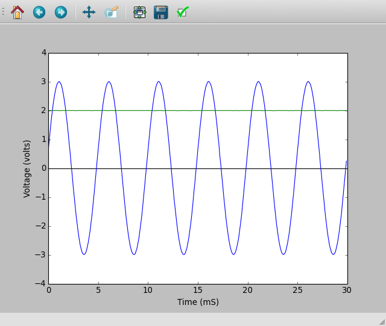
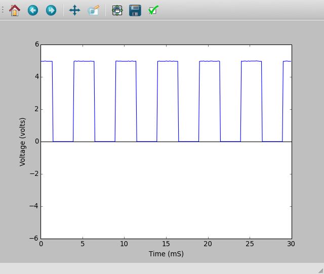
2.6 Signal d’antenne alternatif dû au secteur
Objectif
Étudier l’alimentation du secteur en courant alternatif. Explorer le phénomène de propagation de tensions alternatives à travers l’espace.
- Connecter un long fil en A3
- Approcher une extrémité du fil près d’une ligne d’alimentation du secteur, sans toucher aucune source de tension.
- Activer A3, et son analyse.
Le signal d’antenne du secteur est affiché ci-dessous, il y a cinq cycles en 100 ms. Sans faire aucune connexion, comment se fait-il qu’on reçoive un signal de tension alternative depuis le secteur ? Pourquoi la tension augmente-t-elle quand on touche le fil connecté en A1 avec la main ?
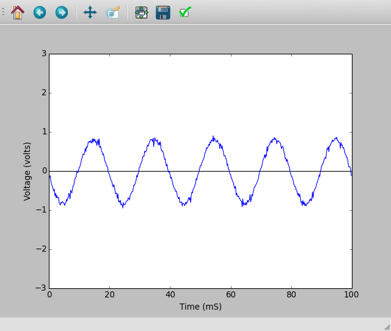
2.7 Séparation des composantes continue et alternative
Objectif
Séparer les composantes alternative et continue d’un signal à l’aide d’un condensateur.
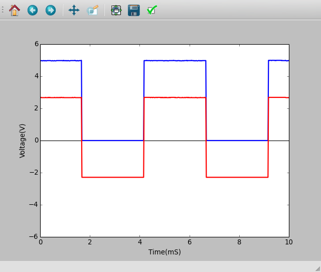
- Régler SQR1 à 500 Hz
- Activer A1 et A2
- Ajuster l’échelle horizontale pour observer plusieurs cycles.
Les signaux observés avec et sans le condensateur en série sont affichés sur la figure. La tension oscille entre 0 et 5 V. Après traversée d’un condensateur, la tension oscille entre -2,5 V et +2,5 V.
Qu’obtient-on si on soustrait 2,5 V de l’ordonnée de chaque point du premier graphique ? C’est ce que le condensateur a fait. Il n’a pas autorisé la composante continue à passer. On peut considérer que le signal original consiste en une tension alternative d’amplitude 2,5 V superposée à un signal continue de +2,5 V.
Il faut éventuellement connecter une résistance entre A2 et GND pour observer le signal oscillant entre -2,5 V et +2,5 V. Retirer la résistance et observer le signal.
2.8 Le corps humain comme conducteur
Objectif
Toucher un fil du secteur est fatal parce que notre corps est un conducteur électrique. On peut explorer cela à l’aide de signaux de faible tension.
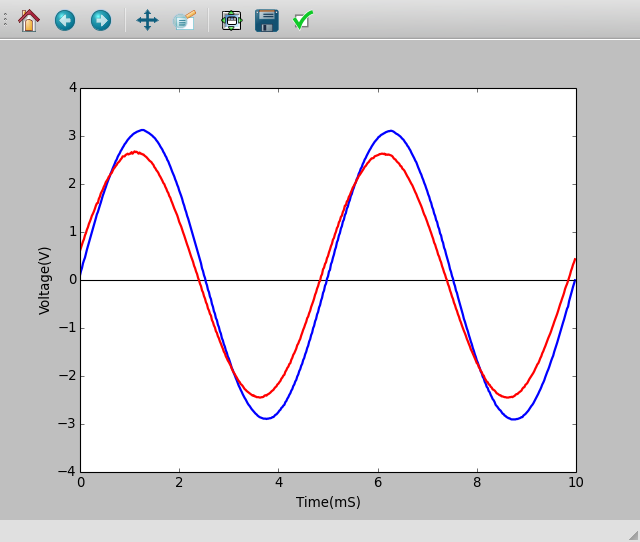
- Régler WG à 200 Hz.
- Activer A1, A2 avec leurs analyses.
- Connecter WG et A1, avec un fil
- Connecter WG et A2 avec son corps et noter les tensions
- Recommencer à l’aide d’un signal de 3 V continu issu de PV1.
La tension crête observée est de moins de 3 V, à cause de la résistance du corps humain. Il peut y avoir un peu de perturbation due au signaux à 50 Hz du secteur captés par effet d’antenne. On peut éliminer cela en travaillant loin des lignes d’alimentation du secteur, à l’aide d’un ordinateur portable.
2.9 Résistance électrique du corps humain
Objectif
Mesurer la résistance électrique du corps humain en la comparant à une résistance connue. On commence avec un signal continu issu de PV1 puis on continue avec un signal alternatif issu de WG.
- Régler PV1 à 3 V
- Relier PV1 à A2, à travers son corps, et mesurer la tension en A2
- Calculer la résistance de son corps comme expliqué à la section 2.4↑
- Recommencer en utilisant un signal sinusoïdal au lieu de PV1. Activer les analyses de A1 et A2 afin de mesurer les tensions.
Les mesures en courant continu sont plus affectées par les bruits électriques. La résistance en courant alternatif est censée être inférieure à la résistance en courant continu. La résistance est due à notre peau, le courant électrique peut y passer comme il passe à travers un condensateur.
2.10 Photorésistances
Objectif
Étudier une photorésistance (LDR). Mesurer l’intensité de la lumière et sa variation en fonction de la distance à la source.
- Mesurer la résistance de la LDR, pour diverses intensités lumineuses.
- Éclairer la LDR à l’aide d’une lampe à fluorescence, A1 est censée afficher des variations
- Placer A1 en mode alternatif et mesurer la fréquence de l’oscillation
La résistance varie de 1kΩ à environ 100kΩ selon l’intensité de la lumière qui l’éclaire. La tension est proportionnelle à la résistance (si le courant est constant). La résistance diminue quand l’éclairage augmente. Si on utilise une source de lumière ponctuelle, la résistance est censée augmenter comme le carré de la distance entre la photorésistance et la source lumière.
2.11 Tension d’une pile-citron
Objectif
Créer une source de tension en insérant des plaques de zinc et cuivre dans un citron. Explorer les possibilités de fournir du courant et la résistance interne.
- Cliquer sur A1 pour mesurer la tension
- Mesurer la tension avec et sans une résistance de 1kΩ.
La tension entre le zinc et le cuivre est d’environ 0,9 V. Quand on connecte la résistance, elle diminue à quelques 0,33 V. Quand on connecte la pile, le courant commence à circuler à travers la résistance. Mais pourquoi la tension diminue-t-elle ?
Quelle est la résistance interne de la pile ?
Le courant est le flux de charges et il doit faire le tour complet. Ce la signifie que le courant doit traverser la pile aussi. Selon la résistance interne de la pile, une part de la tension est perdue à l’intérieur même de la pile. Est-ce que la même chose se produit avec une pile du commerce neuve ?
2.12 Un générateur alternatif simple
Objectif
Mesurer la fréquence et l’amplitude d’une tension induite aux bornes d’un bobinage par un aimant en rotation. On utilise l’aimant de 10mm × 10mm et la bobine de 3000 tours qui sont dans le kit.
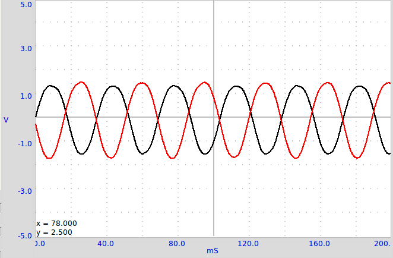
- Fixer l’aimant couché sur l’axe du moteur et alimenter ce moteur avec une pile de 1,5 V
- Activer A1 et A2, avec option d’analyse
- Régler la base de temps sur 100 ms pleine échelle
- Approcher le bobinage de l’aimant (sans le toucher), et observer la tension induite
- Recommencer l’expérience avec deux bobinages.
La tension obtenue est affichée dans la figure. La différence de phase entre les deux signaux dépend de l’angle entre les axes des deux bobinages.
Approcher un bobinage court-circuité près de l’aimant et observer le changement de fréquence. Le bobinage court-circuité prend de l’énergie du générateur et la vitesse en est diminuée.
2.13 Transformateur de courant alternatif
Objectif
Démontrer l’induction mutuelle entre deux bobinages, fournis avec ExpEYES. Un des bobinages, le primaire, est connecté entre WD et GND. On aligne les axes des deux bobinages et on insère un noyau de ferrite.\begin_inset Separator latexpar\end_inset
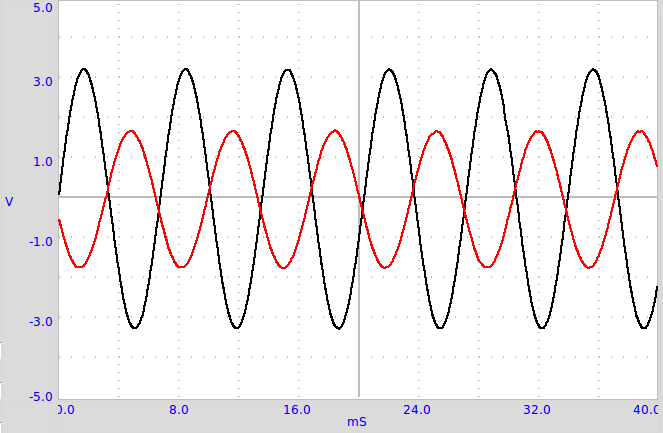
- Faire les connections comme montré sur la figure
- Activer A1 et A2
- Régler WG à 500Hz
- Approcher les bobinages l’un de l’autre et observer la tension en A2.
- Essayer d’insérer un noyau en ferrite
Le signal appliqué et le signal induit sont présentés sur la figure. Un champ magnétique oscillant est la cause de la tension induite. Dans les deux expériences précédentes, le champ magnétique oscillant était créé par le mouvement d’aimants permanents. Dans le cas présent, il est créé par un courant variable dans le temps.
Essayer de faire cette expérience avec un signal carré. Connecter une résistance de 1kΩ aux bornes du bobinage secondaire pour réduire les oscillation de résonance.
Le concept de courant alternatif est introduit en affichant la tension en fonction du temps. On explore le comportement de dipôles tels que les condensateurs et les bobinages en courant continu et alternatif, en mesurant des paramètres tels que l’amplitude, la fréquence et la phase. La conversion de signaux électriques en son et l’inverse est démontré. Pour chaque expérience, on réalise les connexions selon le diagramme donné.
2.14 Résistance de l’eau, en courant alternatif
Objectif
Mesurer la résistance de solutions ioniques, en utilisant des signaux continu et alternatif. On utilise de l’eau ordinaire du robinet. Essayer de mesurer la résistance au préalable à l’aide d’un multimètre.\begin_inset Separator latexpar\end_inset
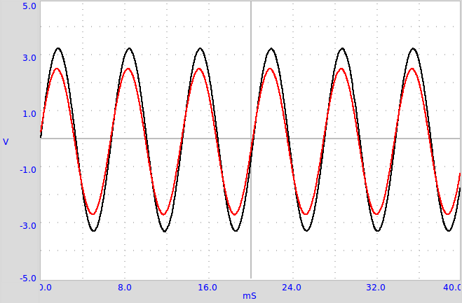
- R1 est censé être comparable avec R, On commence avec 10kΩ.
- Activer A1 et A2
- Calculer la résistance comme expliqué à la section 2.4↑
Les valeurs observées sont montrées dans le tableau. Les résistances en continu et en alternatif semblent très différentes. En courant continu, la résistance du liquide change au cours du temps, à cause d’une électrolyse et de la formation de bulles. La résistance dépend peu de la distance entre électrodes, c’est la surface de l’électrode qui a le plus d’effet. La résistance dépend de la concentration en ions et à la présence d’impuretés dans l’eau.
Essayer de changer la distance entre électrodes. Essayer d’ajouter un sel ordinaire et recommencer les mesures. Pourquoi le comportement est-il différence en courant continu ou alternatif ? Quels sont les porteurs de charges responsables du flux d’électricité à travers les solutions ? Y a-t-il une réaction chimique qui se produit ?
2.15 Générer un son
Objectif
Générer un son avec des signaux électriques, à l’aide d’un buzzer piézo-électrique. Numériser un son et mesurer sa fréquence? Utiliser un buzzer piézo ou toute autre source sonore comme un diapason.
- Activer A1, et son analyse
- Régler WG à 1000Hz, puis changer et écouter le son
Quand on change la fréquence du signal qui excite le piézo, la fréquence et l’intensité du son changent toutes les deux. L’intensité est maximale près de 3500Hz, à cause de la résonance. La fréquence de résonance d’un buzzer piézo dépend de sa taille et de ses propriétés mécaniques.
2.16 Numériser un son
Objectif
Numériser des signaux sonores d’un microphone, et mesurer leur fréquence. Utiliser le buzzer piézo ou toute autre source sonore comme un diapason.
- Activer A1 et MIC, ainsi que leurs analyses
- Positionner le microphone face au buzzer
- Régler WG à 1000 Hz, puis le modifier et observer la sortie MIC
- Utiliser un sifflet à la place du buzzer et trouver sa fréquence à l’aide de la sortie MIC.
Le signal du générateur et la sortie du microphone sont montrés dans la figure
Les ondes sonores créent des variations de pression dans le milieu qu’elles traversent. Le microphone crée une tension proportionnelle aux variations de pression. Les variations de tension sont à l’unisson des variations de pression. On peut comparer le microphone à un capteur de pression, mais qui fonctionne seulement pour les variations de pression.
3 Électronique
Ce chapitre explique plusieurs expériences d’électronique. La plupart d’entre elles sont faites avec l’interface utilisateur oscilloscope. Certaines d’entre elles comme les caractéristiques d’une diode ou d’un transistor ont leur interface utilisateur dédiée.
3.1 Redressement demi-onde à l’aide d’une jonction PN
Objectif
Étudier le fonctionnement d’une diode à jonction PN comme redresseur. Filtrage RC pour réduire les variations de tension (la composante alternative).
- Faire les connexions et observer les sorties
- Connecter une résistance de charge de 1kΩ, noter le changement d’amplitude
- Connecter un condensateur de 1 µF, et observer l’effet de filtrage.
- Essayer plusieurs valeurs de résistances de charge et de condensateurs de filtrage.
La partie négative est ôtée par la diode comme montré sur la figure. Noter aussi que la tension est diminuée de quelques 0,7 V dans la moitié positive, c’est la chute de tension aux bornes de la diode silicium, quand le courant y passe. Une résistance de charge est nécessaire pour que le circuit fonctionne correctement, on peut utiliser plus de 1kΩ, mais NE PAS utiliser de valeurs plus faibles, comme la source courant alternatif ne peut pas fournir un courant de plus de 5mA.
On peut voir que le condensateur se charge puis qu’il maintient la tension pendant la partie manquante du cycle.
Peut-on utiliser des condensateurs de grande capacité pour réduire la fluctuation de tension ?
Durant quelle partie du cycle le courant traverse-t-il la diode ?
Qu’est qui conditionne la valeur du courant crête ?
3.2 Redressement double alternance avec des jonctions PN
Objectif
Réaliser un redresseur double alternance, à l’aide de deux diodes. Il faut deux signaux alternatifs, déphasés de 180 degrés. Ceux-ci sont fournis par WG et WG.
- Faire les connexions
- Activer A1, A2 et A3
- Régler WG à 200 Hz et ajuster la base de temps pour voir 4 ou 5 cycles.
On laisse comme exercice à l’utilisateur de réduire la fluctuation de tension à l’aide d’un condensateur. Cette expérience est seulement là pour montrer le fonctionnement d’une redressement double alternance, il ne peut pas produire beaucoup plus que quelques milliampères de courant.
En quoi un redressement double alternance est-il supérieur à un redressement simple alternance ?
3.3 Écrêtage à l’aide d’une diode à jonction PN
Objectif
Démontrer l’écrêtage d’un signal alternatif à différents niveaux, à l’aide d’une diode à jonction PN.
- Faire les connexions et observer les sorties.
- Changer PV1 et observer le changement dans les sorties
Le niveau d’écrêtage est conditionné par la tension continue appliquée et par la chute de tension de la diode.
3.4 Décalage à l’aide d’un diode à jonction PN
Objectif
Démontrer le décalage d’un signal alternatif à différents niveaux, à l’aide d’une diode à jonction PN

- Faire les connexions et observer les sorties.
- Changer PV1 et observer le changement dans les sorties
Le niveau de décalage est conditionné par la tension continue appliquée et par la chute de tension de la diode.
3.5 Oscillateur à IC555
Objectif
Câbler un circuit de multivibrateur astable à l’aide d’un IC555, mesurer la fréquence et le rapport cyclique de la sortie.
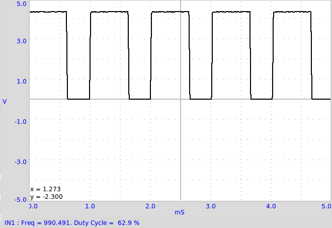
Le circuit est présenté sur la figure. La fréquence est données par f = 1 ⁄ (ln2 × C × (R1 + 2R2)). La durée HAUTE est donnée par ln2 × C × (R1 + R2) et la durée BASSE par ln2 × C × R2.
- Faire les connexions
- mesurer la fréquence et le rapport cyclique.
- Recommencer en changeant les valeurs de R1
Le signal de sortie est montré sur la figure. Changer la valeur des résistances et du condensateur, puis comparer la fréquence et le rapport cyclique avec les valeurs calculées.
3.6 Amplificateur inverseur
Objectif
Câbler un amplificateur inverseur à l’aide d’un ampli-op et le tester.
- Régler l’amplitude de WG à 80 mV et la fréquence à 1000 Hz
- Activer A1 et A2 avec option d’analyse
- Sélectionner le calibre 1 V pour A1 et A2
- Faire les connexions et observer la sortie
- Changer le gain en modifiant les valeurs des résistances.
On peut observer le gain par l’amplitude, mais aussi le déphasage dans les résultats.
3.7 Amplificateur non-inverseur
Objectif
Câbler un amplificateur non-inverseur à l’aide d’un ampli-op et le tester.
- Régler l’amplitude de WG à 80 mV et la fréquence à 1000 Hz
- Activer A1 et A2 avec option d’analyse
- Sélectionner le calibre 1 V pour A1 et A2
- Faire les connexions et observer la sortie
- Changer le gain en modifiant les valeurs des résistances.
On peut observer le gain par l’amplitude, mais aussi le déphasage dans les résultats.
3.8 Intégrateur à ampli-op
Objectif
Câbler un intégrateur à ampli-op et le tester.
- Régler l’amplitude de WG à 80 mV et la fréquence à 1000 Hz
- Activer A1 et A2 avec option d’analyse
- Sélectionner le calibre 1 V pour A1 et A2
- Faire les connexions et observer la sortie
- Changer le gain en modifiant les valeurs des résistances.
On peut observer le gain par l’amplitude, mais aussi le déphasage dans les résultats.
3.9 Portes logiques
Objectif
Étudier des portes logiques en utilisant SQ1 et PV1 comme entrées, avec des circuits intégrés de portes logiques TTL 7408 and 7432.
- Activer A1, A2 et A3. Régler le calibre pour A1 et A2 à 8 V
- Régler SQ1 à 200 Hz et ajuster la base de temps pour voir plusieurs cycles
- régler SQ2 depuis la forme de signal de WG, régler WG à 200 Hz
- Recommencer avec la porte OU, 7432
- La résistance de 1kΩ est nécessaire pour connecter un signal de 5 V à l’entrée A3.
Le fonctionnement de la porte logique sera évident à partir des trois signaux. On peut décaler les traces verticalement pour les séparer et les rendre plus claires.
3.10 Diviseur d’horloge
Objectif
Étudier un diviseur d’horloge, à l’aide d’une bascule D (famille TTL, 7474).

- Activer A1 et A2, Régler leurs calibres à 8 V
- Régler SQ1 à 500 Hz
La sortie est basculée à chaque front montant sur l’entrée, si bien que la fréquence est divisée par deux. Le signal de sortie est un signal carré symétrique, même si le signal d’entrée a un rapport cyclique différent. La tension de sortie HAUTE d’un circuit intégré TTL est proche de 4 V seulement.
3.11 Caractéristique U-I d’une diode
Objectif
Tracer la caractéristique U-I d’une diode et comparer les résultats avec a théorie.
 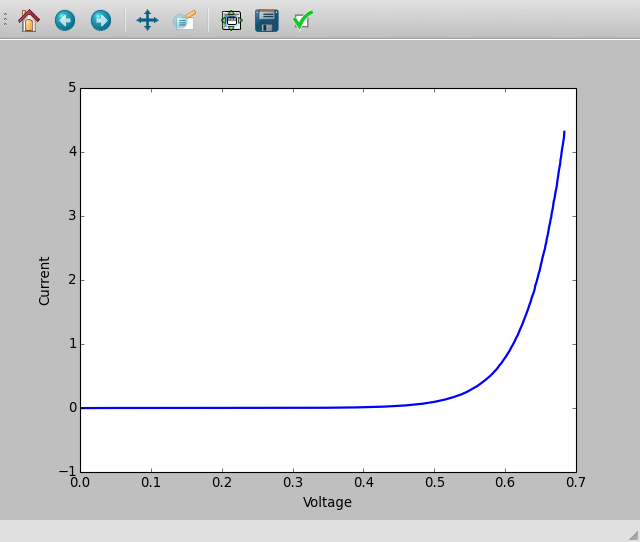
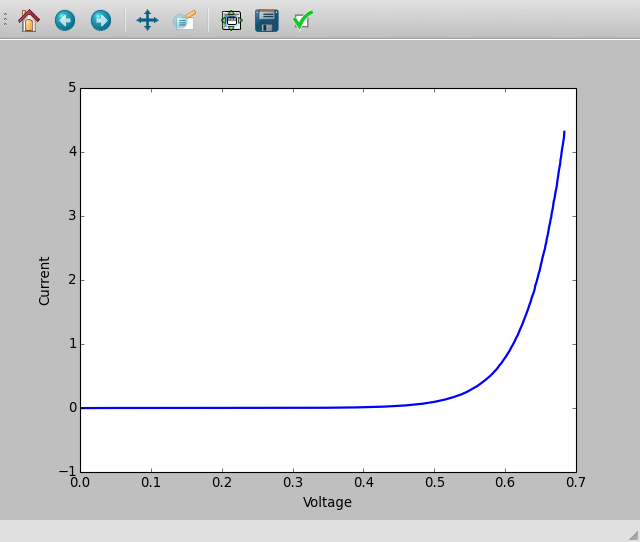
- Faire les connexions
- Cliquer sur DÉMARRER pour tracer la courbe caractéristique.
- Analyser les données
- Tracer les courbes U-I de DELs
La caractéristique U-I d’une jonction PN idéale est donnée par l’équation I = I0(e(qU)/(kT) − 1), où I0 est le courant de saturation inverse, q la charge de l’électron, k la constante de Boltzmann, T la température en Kelvin. Pour une diode réelle, non-idéale, l’équation est I = I0(e(qU)/(nkT) − 1), où n est le facteur d’idéalité, qui vaut 1 pour une diode idéale. Pour des diodes réelles il varie entre 1 et 2. On a utilisé une diode au silicium 1N4148. La valeur de n pour 1N4148 est proche de 2. On a calculé la valeur de n en modélisant les valeurs expérimentales par l’équation.
La tension à laquelle une DEL commence à émettre de la lumière dépend de sa longueur d’onde et de la constante de Planck. L’énergie d’un photon est donnée par E = hν = hc ⁄ λ. Cette énergie est égale au travail d’un électron qui franchit un seuil de potentiel, qui est donné par E = eV0. Donc la constante de Planck est h = eV0λ ⁄ c , où λ est la longueur d’onde de la DEL, e la charge de l’électron et c la vitesse de la lumière.
Recommencer cette expérience en chauffant la diode à différentes températures.
3.12 Caractéristique de la sortie (CE) d’un transistor
Objectif
Tracer la courbe caractéristique de sortie d’un transistor. Le collecteur est connecté à PV1 à travers une résistance de 1kΩ.
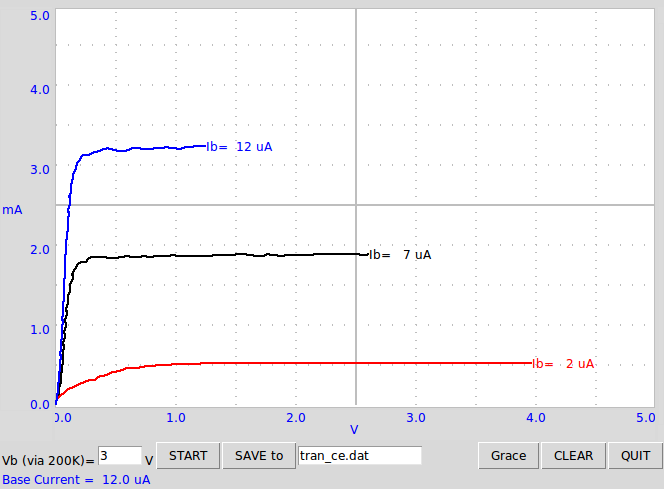
- Régler la tension de base à 1 V et DÉMARRER.
- Recommencer pour diverses valeurs du courant de base.
Les courbes caractéristiques pour différentes valeurs du courant de base sont montrées sur la figure. Le courant de collecteur est obtenu à partir de la différence de potentiel aux bornes de la résistance de 1kΩ.
Le courant de la base dépend du réglage de la source de tension à l’extrémité dune résistance de 100kΩ, l’autre extrémité étant connectée à la base. La valeur du courant de base est calculée par Ib = (Upv2 − UA2)/(100 × 103) × 106μA. Si A2 n’est pas connectée, le code considère une valeur de 0,6 V pour la base afin de calculer le courant dans celle-ci.
3.13 Transmission d’un signal Opto-électrique
Objectif
Démontrer la transmission de signaux à l’aide de lumière. Une DEL est alimentée par un signal de fréquence 1 kHz et on dirige sa lumière vers un photo-transistor.

- Placer la DEL en face du photo-transistor et régler SQ1 à 1000Hz
- Recommencer l’expérience en changeant la fréquence.
L’entrée SEN est connectée à 5 V à travers une résistance de 5, 1kΩ. La sortie du photo-transistor crée un signal de fréquence 1kHz comme montré sur la figure. Le signal carré est la tension qui alimente la DEL. Quand la DEL est allumée, le photo-transistor est conducteur et la tension au collecteur tombe à 0, 2V. Quand la DEL est éteinte le transistor passe en mode isolant et le collecteur remonte à la tension de l’alimentation. Les temps de montée et de descente du photo-transistor semblent être différents. Trouver la limite haute en fréquence à laquelle le photo-transistor est capable de répondre.
Recommencer cette expérience avec une fibre optique pour guider la lumière depuis la DEL jusqu’au photo-transistor.
4 Électricité et magnétisme
Ce chapitre contient principalement des expériences sur le comportement en régime stationnaire et en régime transitoire pour des dipôles LCR. Il confronte les résultats expérimentaux avec la théorie. Il donne aussi une expérience sur l’induction électromagnétique.
4.1 Circuits RLC, réponse en régime stationnaire
Objectif
Étudier le comportement de dipôle RLC dans un circuit en courant alternatif. Trois combinaisons différentes peuvent être étudiées.
- Faire les connexions une par une, selon les schémas
- Prendre note des mesures d’amplitude et de phase, dans chaque cas
- Recommencer les mesures en changeant la fréquence.
- Pour le circuit série RLC, la jonction entre L et C est surveillées par A3
- Pour la résonance, sélectionner C = 1µF, L = 10mH and f = 1600Hz, ajuster f pour obtenir un déphasage nul
- La tension totale aux bornes de L et C s’approche de zéro, les tensions de chacun sont déphasées à la résonance
La tension alternative de la source est en A1 et la tension aux bornes de la résistance en A2. Si on soustrait les valeurs instantanées de A2 de A1 on obtient la tension totale aux bornes de L et C. IL faut utiliser un bobinage avec une résistance négligeable pour de bons résultats. Le déphasage entre courant et tension est donnée par △Φ = arctan⎛⎝(Zc − ZL)/(ZR)⎞⎠.
La tension totale, la tension aux bornes de R et la tension aux bornes de LC sont montrées dans la figure. Le diagramme de phase montre le déphasage entre courant et tension. Le bobinage utilisé dans l’expérience a une inductance d’environ 10mH et une résistance de 20Ω.
À 1600Hz, Xc ≈ XL et la tension aux bornes de LC est déterminée par la résistance du bobinage. À la fréquence de résonance, la tension aux bornes de LC sera minimale, déterminée par la résistance du bobinage. L’entrée A3 est connectée entre L et C, si bien que les tensions individuelles de L et C peuvent être présentées.
4.2 Réponse de circuits RC en régime transitoire
Objectif
Tracer l’évolution de la tension aux bornes d’un condensateur, quand il est chargé en appliquant un échelon de tension à travers une résistance. Calculer la valeur de la capacité d’après la courbe.
- Dan le menu «Électricité», choisir le sous-menu «Circuit RC en régime transitoire».
- Cliquer sur les boutons Échelon 0->5V et Échelon 5->0V pour afficher les graphiques
- Ajuster l’échelle horizontale si nécessaire, et recommencer.
- Calculer la constante de temps RC.
Quand on applique un échelon de 0 à 5 V, la tension aux bornes du condensateur s’approche exponentiellement de 5V comme montré sur la figure. En modélisant la courbe de décharge par U(t) = U0e − (t)/(RC) , on peut extraire la constante de temps RC et s’en servir pour trouver la valeur de la capacité.
Le tension aux bornes d’un condensateur ne varie exponentiellement que quand on le charge au travers d’un dipôle linéaire, une résistance par exemple. Si on le charge à l’aide d’une source de courant constant, la tension change linéairement, puisque Q = It = CU , et la tension croît linéairement avec le temps comme U = ⎛⎝(I)/(C)⎞⎠t .
4.3 Réponse transitoire de circuits RL
Objectif
Explorer la nature du courant et de la tension quand un échelon de tension est appliqué à une résistance et un bobinage en série. En mesurant la tension en fonction du temps aux bornes du bobinage, on peut calculer son inductance.
Dans un circuit RL U = RI + L(dI)/(dt) , équation qui se résout en I = I0e − (R)/(L)t. Le coefficient du terme exponentiel R/L peut être déduit du graphique de la tension aux bornes du bobinage. La résistance du bobinage doit être incluse dans les calculs, R = Rext + RL.
- Le bobinage est la bobine de 3000 tours
- Cliquer sur les boutons Échelon 0->5V et Échelon 5->0V pour afficher les graphiques
- Ajuster l’échelle horizontale, si nécessaire, et recommencer.
- Calculer la valeur de l’inductance
- Insérer un noyau en fer dans le bobinage et recommencer
La réponse transitoire du circuit RL est montrée sur la figure. La courbe exponentielle est modélisée pour extraire la valeur de L/R. La résistance de la bobine est mesurée en la comparant avec la résistance externe connue, en courant continu. A2 est connecté à OD1 pour une mesure plus précise de la résistance du bobinage.
Les tensions appliquées sont positives, mais le graphique va vers des tensions négatives, pourquoi ?
Quel était le courant avant le début de l’échelon 5->0 V ? Quelle est la force contre-électromotrice (fcem) ?
Recommencer avec deux bobinages en série, (a) en les plaçant l’un loin de l’autre, (b) en les plaçant l’un sur l’autre, (c) après changement d’orientation de l’un des deux. On peut voir l’effet de l’induction mutuelle.
4.4 Réponse transitoire de circuit RLC
Objectif
Explorer la nature oscillatoire de la mise en série de L et C. La pulsation de résonance d’un circuit LC série est donnée par ω0 = (1)/(2π√(LC)). Le facteur d’amortissement est (R)/(2)√((C)/(L)), et il vaut 1 pour l’amortissement critique. [A] [A] http://en.wikiversity.org/wiki/RLC_circuit Selon les valeurs de C/L et R, la réponse peut être sous-amortie, amortie de façon critique ou sur-amortie.
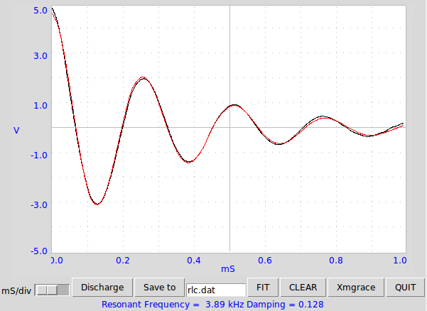
- Commencer avec le bobinage et un condensateur de 0, 1 µF
- Cliquer sur Échelon 5->0 V. Ajuster l’axe des abscisses et recommencer si nécessaire.
- Ajuster le graphique (FIT) pour trouver la fréquence de résonance et l’amortissement.
- Recommencer avec une résistance entre OD1 et le bobinage.
- Recommencer l’expérience avec diverses valeurs de R, L et C.
On a utilisé le bobinage de 3000 tours et le condensateur de 0, 1 µF.La tension aux bornes du condensateur est montrée sur la figure après un échelon 5->0 V. La fréquence de résonance mesurée est conforme à f = (1)/(2π)√((1)/(LC)) , compte tenu de la tolérance sur les valeurs des composants.
4.5 Différenciation et intégration RC
Objectif
Les circuits RC peuvent intégrer ou différencier un signal de tension par rapport au temps. Si on intègre un signal carré on obtient un signal triangulaire et si on différencie on obtient des pics aux transitions.\begin_inset Separator latexpar\end_inset
- Sélectionner l’option signal triangulaire pour WG
- Régler WG à 500 Hz (T = 2ms), R = 1kΩ et C = 1 µF
- Ajuster l’échelle horizontale pour voir plus de quatre cycles.
- Recommencer la même chose pour le différenciateur RC, à 50Hz.
L’intégration d’un signal triangulaire donne une forme parabolique et la différenciation donne une forme carrée. La différenciation ne peut être montrée qu’à basse fréquence. Essayer cela pour d’autres formes de signaux, par exemple signal carré. Si on intègre un signal carré on est censé obtenir un signal triangulaire.
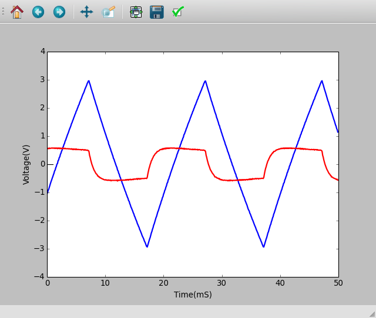
4.6 Analyse de Fourier
Objectif
Étudier la transformée de Fourier d’un signal. Représentations temporelle et fréquentielle d’un signal.
- Connecter SQ1 à A1 et WG à A2. Mettre A1 en mode couplage alternatif (interrupteur à glissière sur le boîtier)
- Activer A1 et A2, sélectionner le calibre 4 V
- Régler WG et SQ1 à 500 Hz
- Cliquer sur le bouton FFT
Dans le graphique de la transformée de Fourier, la fréquence est sur l’axe x et l’axe y montre l’intensité relative des composants fréquentiels du signal. On appelle ça la représentation fréquentielle [B] [B] http://en.wikipedia.org/wiki/Fourier_transform. Dans le cas du signal sinusoïdal il y a un seul pic dominant, les pics plus petits sont une mesure de la distorsion du signal sinusoïdal.
Un signal carré peut être représenté comme f(θ) = sin(θ) + (sin(3θ))/(3) + (sin(5θ))/(5) + ⋯. Dans la transformée de Fourier d’un signal carré de fréquence f , il y aura un composant 3f (dont l’amplitude est le tiers du composant f ), un composant 5f (amplitude un cinquième), etc. comme montré sur la figure.
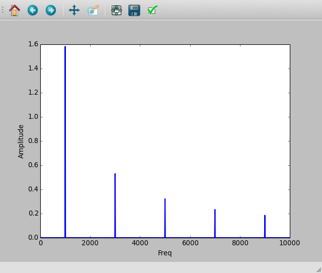
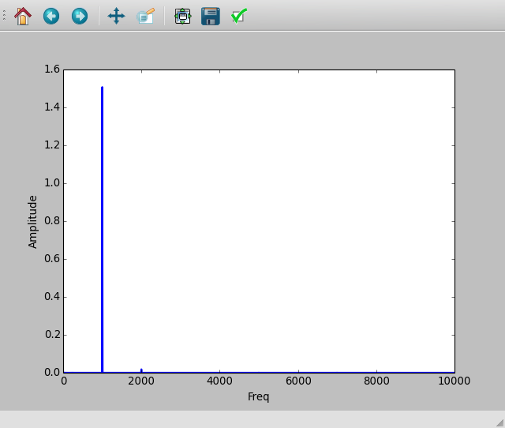
4.7 Induction électromagnétique
Objectif
Explorer la tension induite aux bornes d’un bobinage par un champ magnétique variable, en laissant tomber un petit aimant cylindrique à travers le bobinage. On utilise un tube pour guider l’aimant à travers le bobinage.
 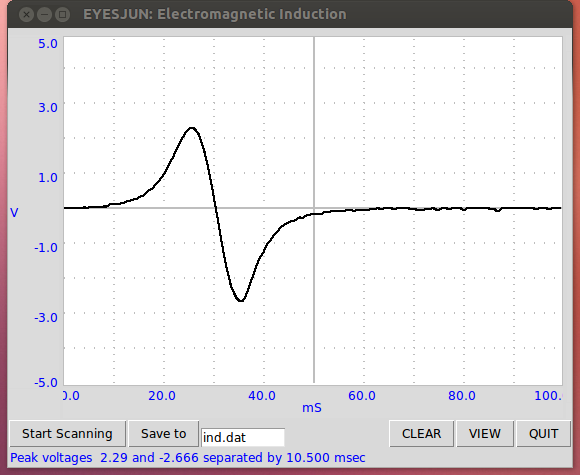
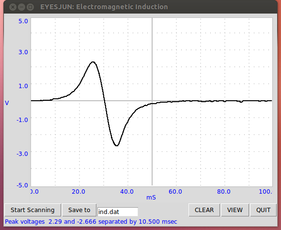
- Cliquer sur «Démarrer le scan». Un trace horizontale devrait apparaître
- Laisser tomber l’aimant à travers la bobine, jusqu’à ce qu’on capture une trace.
- Recommencer le processus en changeant des paramètres comme la force de l’aimant, la vitesse, etc.
Le résultat est montré sur la figure. L’amplitude augmente avec la vitesse de l’aimant. D’après le graphique, on peut déterminer le temps que met l’aimant à traverser le bobinage.
Le deuxième pic est plus grand que le premier. Pourquoi ? À quel endroit est censé se trouver l’aimant quand la tension induite passe par zéro ? Laisser tomber l’aimant depuis différentes hauteurs et faire un graphique de la tension crête en fonction de la racine carrée de la hauteur de chute.
5 Le son
Les variations de pression, de part et d’autres d’une pression d’équilibre, transmises par un milieu s’appellent un son. Ce sont des ondes longitudinales. Si on déplace une feuille de papier d’avant en arrière dans l’air on peut générer ce type d’ondes de pression, comme avec le cône en papier d’un haut-parleur. Quand la fréquence est dans l’intervalle de 20 à 20000 Hz, on peut entre le son. Dans ce chapitre, on va générer du son à partir de signaux électriques, le détecter à l’aide du microphone (un capteur de pression !) et étudier des propriétés telles que l’amplitude et la fréquence. La vitesse du son est mesurée en observant le déphasage d’un son numérisé, avec la distance.
5.1 Réponse en fréquence d’un piézo
Objectif
Faire le graphique de la courbe de réponse d’un disque piézo en scannant la fréquence et en mesurant l’amplitude à la sortie du microphone.
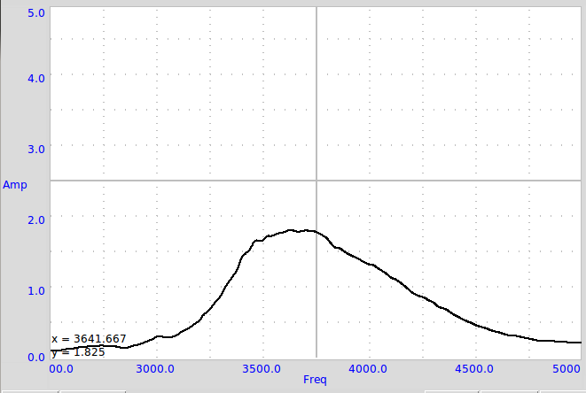
- Faire les connexions et fixer le buzzer et le microphone face à face
- Cliquer sur le bouton DÉMARRER
Le graphique de l’amplitude en fonction de la fréquence est montré sur la figure. L’amplitude est maximale près de 3500 Hz.
5.2 Vitesse du son
Objectif
Calculer la vitesse du son en mesurant les variation de pression selon la distance.
Le son voyage comme une série de compressions et d’expansions. La figure 5.1↓(a) montre les régions de haute et basse pression le long de la direction de propagation, en même temps que la sortie d’un capteur de pression aux positions correspondantes.
On peut faire un graphique des variations de pression à tout point en synchronisation avec la variation au point de départ. La phase de la sortie du microphone change quand on modifie sa distance au piézo. Quand on le déplace d’une longueur d’onde, la phase change de 360°. Si la phase change de X degrés pour un changement de la distance de △D, la longueur d’onde est donnée par λ = (360 × △D)/(X). On obtient la vitesse du son en multipliant cela par la fréquence.

- Régler la fréquence au maximum de résonance en mesurant la réponse en amplitude 5.1↑
- Fixer le piézo face au microphone, le long d’un axe
- Activer la mesure
- Ajuster la distance pour que les deux traces soient en phase
- Modifier la distance pour les déphaser de 180° ; cette distance est la demi-longueur d’onde.
À 3500 Hz, un changement de distance de 2 cm provoque un changement de phase de 176° à 102°. À l’aide de l’équation, v = f × (360 × △D)/(X) = 3500 × (360 × 2)/((176 − 102)) = 34054cm⋅s − 1. Il est important de conserver le microphone et le disque piézo sur le même axe pour des résultats précis.
5.3 Battements sonores
Objectif
Étudier les interférences sonores de deux sources individuelles. Deux buzzers piézo sont alimentés par deux sources indépendantes, et le son est envoyé vers un microphone.
- Régler WG à 3500Hz et SQ1 à 3600Hz
- Activer WG et SQ1 séparément pour vérifier la sortie MIC
- Ajuster la position des buzzers piézo, par rapport au microphone, pour obtenir pratiquement la même amplitude avec chacun
- Activer les deux en même temps pour obtenir la figure de battement
- Cliquer sur FFT pour voir les spectre fréquentiel
Sur la figure on peut voir comment l’enveloppe de basse fréquence apparaît. La durée entre deux instants de pression minimale, sur l’enveloppe, correspond à la demi-fréquence des battements. La transformée de Fourier est montrée sur la figure.
6 Mécanique et thermophysique
Les phénomènes de résonance sont étudiés avec le pendule forcé. On mesure la valeur de l’accélération due à la pesanteur à l’aide d’un pendule. On étudie le refroidissement d’un liquide à l’aide d’une sonde PT100.
6.1 Accélération de la pesanteur à l’aide d’un pendule pesant
Objectif
Mesurer la période des oscillations d’un pendule pesant à l’aide d’une barrière photo-électrique et calculer l’accélération de la pesanteur. La période des oscillations d’une tige uniforme autour d’une de ses extrémités est donnée par T = 2π√((2ℓ)/(3g)), où ℓ est la longueur et g est l’accélération de la pesanteur. Le pendule (en forme de T, un bord de couteau fixé à une tige de diamètre 6 mm) est mis à osciller entre une DEL et un photo-transistor, connectés à ExpEYES. La DEL et le photo-transistor sont montés sur un support en forme de U comme le montre la figure.\begin_inset Separator latexpar\end_inset
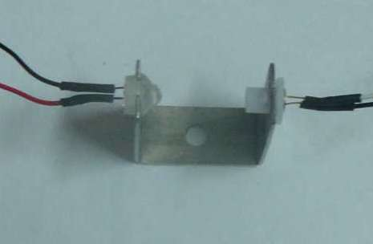
- Mettre le pendule en oscillation et cliquer sur DÉMARRER
- Recommencer avec diverses longueurs de pendule.
La période est mesurée 50 fois, à l’aide d’un pendule pesant de 14, 6cm, et la valeur moyenne est 0.627s. La valeur calculée de g est 977, 4cm⋅s − 2, légèrement différente de la valeur réelle pour les raisons suivantes : La longueur est mesurée depuis le bord du couteau jusqu’au bas de la tige et utilisée dans la formule. Mais il y a un peu de masse présente au-dessus du fil du couteau qui n’est pas comprise dans le calcul. Une autre raison peut être que le pendule n’est peut-être pas exactement vertical dans la position de repos.
6.2 Vitesse angulaire d’un pendule
Objectif
Étudier la nature des oscillations d’un pendule. Un encodeur angulaire est nécessaire pour mesurer le déplacement angulaire en fonction du temps. Mais en utilisant un moteur à courant continu comme capteur, on peut mesurer la vitesse angulaire en fonction du temps.\begin_inset Separator latexpar\end_inset
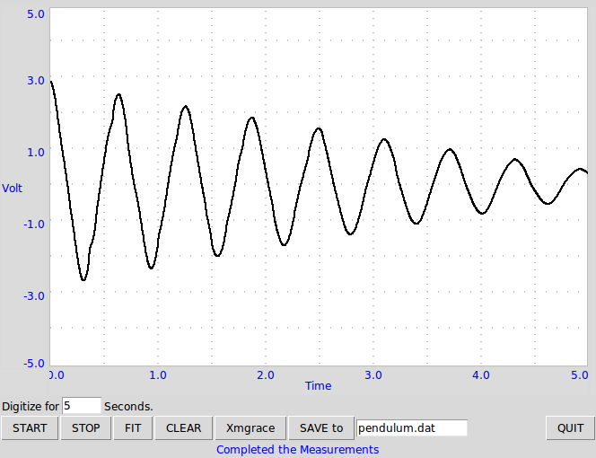
- Attacher un quelconque de pendule rigide à l’axe du moteur.
- Connecter le moteur entre A3 et GND
- Connecter une résistance de 100Ω entre Rg et GND
- Mettre le pendule en oscillation et DÉMARRER la numérisation
Le signal obtenu est montré sur la figure. Quand on le modélise par une équation A = A0sin(ωt + θ)*exp( − dt) + C, à l’aide de Grace, on a obtenu une fréquence angulaire de 10Hz.
Il convient de réaliser le pendule avec une masselotte assez lourde et une tige légère qui la relie à l’axe du moteur. Dans ce cas, le moteur à courant continu se comporte en générateur et la tension est proportionnelle à la vitesse angulaire.
6.3 Résonance d’un pendule forcé
Objectif
Démontrer la résonance d’un pendule forcé.

Réaliser un pendule avec deux aimants boutons et un morceau de papier. Le suspendre et placer la bobine de 3000 tours à proximité, comme montré sur la figure.
- Connecter la bobine entre SQ1 et GND
- Calculer la fréquence de résonance d’après la longueur du pendule
- Scanner la fréquence au voisinage de la fréquence de résonance attendue
Quand SQ1 atteint la fréquence de résonance du pendule, son amplitude augmente. Un pendule long de 4 cm (du centre des aimants à l’axe de rotation) a résonné à environ 2, 5Hz, presque conformément à la fréquence naturelle calculée. La fréquence de résonance est donnée par f = (1)/(2π)√((g)/(ℓ)), où ℓ est la distance du centre de l’aimant au point de suspension et g est l’accélération de la pesanteur.
Recommencer l’expérience en modifiant la longueur du pendule.
6.4 Mesure de distance, par écho ultrasonore
Objectif
Mesurer une distance en mesurant le temps que prend une salve de fréquence 40kHz à faire un écho contre une surface dure.
- Placer uns surface dire, comme un carton, à quelques 10 cm du module d’écho
- Cliquer sur DÉMARRER
- Changer la distance
La distance est calculée à partir du temps que met une salve sonore à parcourir aller-retour (en écho) la distance qui sépare le module de la surface réfléchissante. On peut mesurer la distance en fonction du temps, ce qui permet de calculer vitesse, accélération, etc.
6.5 Mesure de température à l’aide d’une sonde PT100
Objectif
Enregistrer la température d’un liquide à l’aide d’un thermomètre à résistance de platine. La résistance d’un module PT100 est dépendante de la température par la relation RT = R0[1 + AT + BT2], où A = 3, 9083 × 10 − 3et B = − 5, 775 × 10 − 7. \begin_inset Separator latexpar\end_inset

- Entrer le gain l’erreur d’offset et la valeur du courant de CSS
- Sélectionner l’intervalle de température et les intervalles de temps
- Sélectionner les paramètres requis et cliquer sur DÉMARRER
Un graphique de refroidissement de l’eau d’un récipient est montré sur la figure.
Pour mesurer la résistance d’un élément PT100, on le connecte entre CSS et GND et on mesure la tension à ses bornes. Il est possible de mesurer la valeur exacte de CSS à l’aide d’un multimètre ou en mesurant la tension aux bornes d’une résistance connue. L’entrée de A3 est amplifiée 11 fois en connectant une résistance de 1kΩ entre Rg et GND.
La résistance d’une sonde PT100 est 100Ω à 00C. Elle change pratiquement de 0.4Ω ⁄ °C , modifiant la tension de 0, 4mV. La sortie du convertisseur analogique numérique change d’un bit de poids faible pour un changement de 1, 22mV dans la tension d’entrée, donc un changement de température de moins de 3]C ne serait pas toujours détecté. On utilise un amplificateur non-inverseur pour augmenter la résolution. Le gain de cet amplificateur doit être tel que la température maximale mesurée donne une tension de sortie inférieure à 3,3 V. Modifier le champ «gain» selon.
7 Coder en Python pour expEYES-17
Les programmes à interface graphique décrit dans les chapitres précédents sont prévus pour un ensemble fini d’expériences. Pour développer de nouvelles expériences, on doit savoir comment accéder aux fonctionnalités d’expEYES par logiciel. Les appels de fonctions importants pour communiquer avec l’appareil sont donnés ci-dessous.
Pour accéder au matériel de EYES17, les modules Python pour eyes17 doivent être installés. Il sont censés se trouver dans un répertoire nommé eyes17, qui pourrait être dans votre répertoire personnel ou sur le «Python PATH». Tout programme doit commencer par les deux lignes suivantes :
import eyes17.eyes p = eyes17.eyes.open()
La variable p est l’objet logiciel qui représente le matériel.
Les sections suivantes expliquent les appels de fonctions Python pour accéder au matériel EYES17. Chaque appel de fonction est expliquer avec un exemple d’utilisation.
Règle la tension continue en PV1 et PV2. L’intervalle pour PV1 est de -5 à 5. L’intervalle pour PV2 est de -3,3 à 3,3.
print p.set_pv1(4) print p.set_pv2(2.1)
La valeur assignée à la sortie est affichée. Mesurer les tensions avec un voltmètre.
Renvoie la tension de l’entrée spécifiée.
print p.get_voltage(’A1’) print p.get_voltage(’A2’) print p.get_voltage(’A3’) print p.get_voltage(’MIC’) print p.get_voltage(’SEN’)
Connecter PV1 à A1, et utiliser set_pv1() et get_voltage(’A1’) ensemble. Cette fonction ajuste le calibre d’entrée par essais et erreurs, selon la valeur du signal d’entrée.
Renvoie un tuple, qui contient le timbre à date de l’ordinateur et la tension à l’entrée spécifiée.
print p.get_voltage_time(’A1’)
Renvoie la valeur de la résistance connectée à SEN, qui devrait être entre 100Ω et 100kΩ pour une précision raisonnable.
print p.get_resistance()
Renvoie la valeur de la capacité connectée en IN1 (fonctionne bien dans le domaine du pF)
print p.get_capacitance()
Renvoie la version du firmware.
print p.get_version()
Renvoie la température du processeur à l’intérieur de EYES17
print p.get_temperature()
Règle l’état logique de la sortie OD1, SQ1, etc. Connecter OD1 à A1 et lancer :
p.set_state(OD1=1) print p.get_voltage(’A1’)
Génère le signal sinusoïdal de la fréquence demandée sur WG (intervalle de 5Hz à 5000Hz). Toutes les valeurs intermédiaires ne sont pas possibles, la fonction renvoie la valeur effectivement adoptée.
print p.set_sine(502)
502.00803
L’amplitude peut être réglée à trois valeurs prédéfinies de tension crête(0 pour avoir 80mV, 1 pour avoir 1V, 3 pour avoir 3V).
p.set_sine_amp(2)
Règle l’amplitude à 3V crête.
Règle la fréquence de la sortie SQ1 (intervalle de 4Hz à 1MHz). Toutes les valeurs intermédiaires ne sont pas possibles, la fonction renvoie la valeur effectivement adoptée.
print p.set_sqr1(15030)
15030.53
Règle la fréquence de la sortie SQ1 (intervalle de 0, 1Hz à 1MHz). Toutes les valeurs intermédiaires ne sont pas possibles, la fonction renvoie la valeur effectivement adoptée. La résolution est fine mais WG est désactivé quand on commande SQ1 de cette façon.
print p.set_sqr1_slow(0.5)
Similaire à set_sqr1() mais SQ2 n’est pas disponible en même temps que WG, une seule des deux sorties est utilisable à la fois.
Règle la fréquence de la sortie SQ1 (intervalle de 0, 1Hz à 1MHz). Toutes les valeurs intermédiaires ne sont pas possibles, la fonction renvoie la valeur effectivement adoptée.
print p.set_sqr1(1000, 30) # 1000 Hz, rapport cyclique 30%
Mesure la fréquence d’un signal carré sur l’entrée, IN2 ou SEN. Connecter SQ1 à IN2 et lancer le code :
p.set_sqr1(1000) print p.get_freq(’IN2’)
Mesure le rapport cyclique d’un signal carré , IN2 ou SEN. Connecter SQ1 à IN2 et lancer le code :
p.set_sqr1(1000, 30) print p.duty_cycle(’IN2’)
Mesure l’intervalle de temps entre un front montant sur input1 jusqu’à un front descendant sur input2, les entrées peuvent éventuellement être les mêmes. On peut l’utiliser pour tester un signal carré.
Connecter SQ1 à IN2 et lancer le code :
p.set_sqr1(1000, 30) print p.r2ftime(’IN2’, ’IN2’)
0.0003
Le signal carré à 1kHz avec un rapport cyclique de 30% a une période de 1ms et reste à l’état HAUT durant 0, 3ms.
Mesure l’intervalle de temps entre deux fronts montants de l’entrée input. La durée entre deux fronts montants est un cycle. On peut spécifier le nombre cycles à mesurer, la valeur par défaut étant 1. Les valeurs autorisées sont 1,2,4,8,12,16,32 et 48. On peut tester ça avec un signal carré.
Connecter SQ1 à IN2 et lancer le code :
p.set_sqr1(1000) print p.multi_r2rtime(’IN2’, 8)
0.008
Les calibres pour A1 et A2 peuvent être réglés depuis ±0.5V jusqu’à ±16V, à l’aide d’amplificateurs à gain programmable.
p.select_range(’A1’, 4) # 4 volt maximum p.select_range(’A1’, 8) # 8 volt maximum
Numérise l’entrée spécifiée. Le nombre d’échantillons peut aller jusqu’à 10000. La durée entre deux échantillons consécutifs est donnée en microseconde (intervalle de 2 à 1000µs).
print p.capture1(’A1’, 5, 5)
affichera deux tableaux de dates et de tensions.
Quand on a besoin de créer un graphique de la tension de sortie pour une meilleure compréhension, on peut le faire à l’aide du module matplotlib, importé grâce à l’interface pylab. Connecter WG à A1 à l’aide d’un fil et lancer :
from pylab import * p.set_sine_amp(2) p.set_sine(1000) p.select_range(’A1’, 4) t,v = p.capture1(’A1’, 300, 10) plot(t,v) show()
Le résultat de ce code est donné ci-dessous.
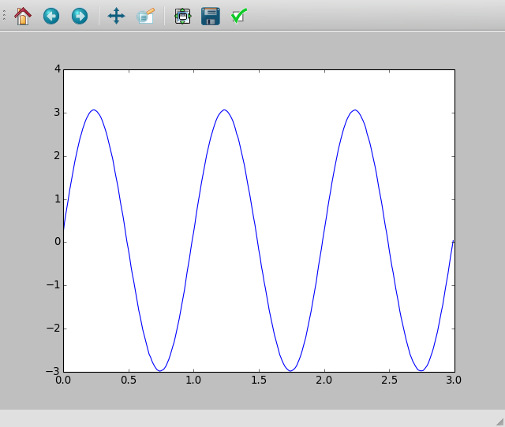
Numérise les entrées A1 et A2 simultanément. Le nombre d’échantillons peut aller jusqu’à 10000. La durée entre deux échantillons consécutifs est donnée en microseconde (intervalle de 2 à 1000µs).
Connecter WG à A1, et une diode entre A1 et A2. Lancer le code ci-dessous :
from pylab import * p.set_sine_amp(2) p.set_sine(1000) p.select_range(’A1’, 4) t,v,tt,vv = p.capture2(300, 10) plot(t,v) plot(tt,vv) show()
Le résultat de ce code est donné ci-dessous.
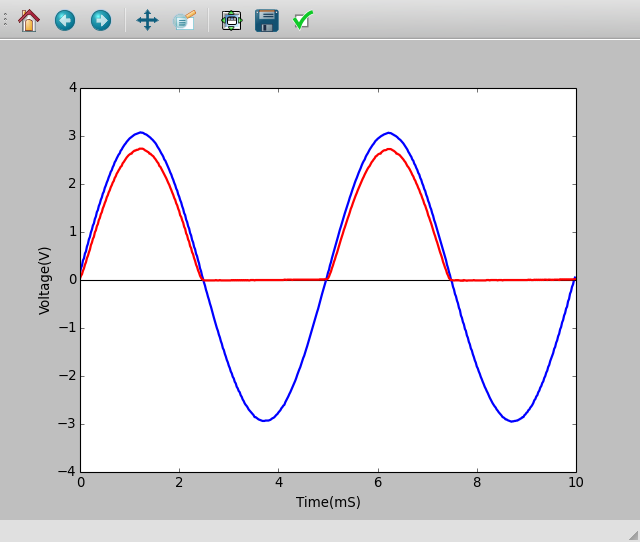
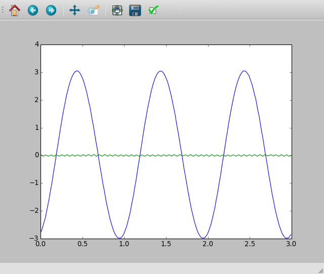
Numérise les entrées A1, A2, A3 et MIC simultanément. Le nombre d’échantillons peut aller jusqu’à 10000. La durée entre deux échantillons consécutifs est donnée en microseconde (intervalle de 2 à 1000µs).
Connecter WG à A3 et lancer le code donné ci-dessous. Le résultat est montré ci-dessus.
from pylab import * p.set_sine_amp(2) p.set_sine(1000) p.select_range(’A1’, 4) res = p.capture4(300, 10) plot(res[4],res[5]) # A3 plot(res[6],res[7]) # MIC show()
Si le paramètre wavetype n’est pas spécifié, cela génère un signal en utilisant la table d’onde existante. Si wavetype est spécifié (’sine’ ou ’tria’), la table d’onde correspondante est chargée.
from pylab import * p.set_wave(1000, ’sine’) p.set_wave(100) # fréq. 100Hz avec la table existante x,y = p.capture1(’A1’, 500,50) plot(x,y) p.set_wave(100, ’tria’) # table d’onde triangulaire et 100 Hz x,y = p.capture1(’A1’, 500,50) plot(x,y) show()
Crée la table d’onde en utilisant l’équation. Connecter WG à A1 et lancer le code ci-dessous. Le résultat est montré plus bas.
from pylab import *
def f1(x):
return sin(x) + sin(3*x)/3
p.load_equation(f1, [-pi,pi])
p.set_wave(400)
x,y = p.capture1(’A1’, 500,10)
plot(x,y)
show()
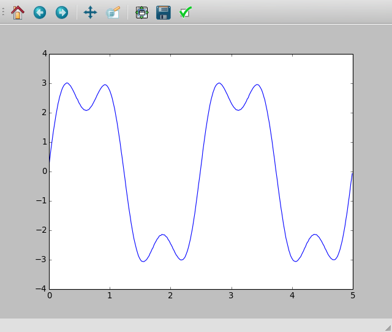
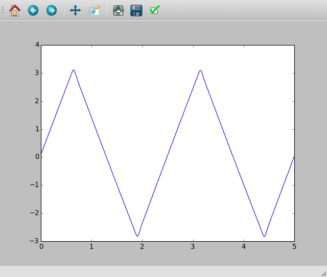
On peut aussi charger la table d’onde avec un tableau de 512 éléments. Connecter WG à A1 et lancer le code ci-dessous. Après l’opération de valeur absolue, la table commence par 256, puis descend jusqu’à 0 et enfin remonte jusqu’à 255, ce qui trace un signal triangulaire. Le résultat dû à ce tableau est montré ci-dessus.
from pylab import * x = arange(-256, 256) x = abs(x) p.load_table(x) p.set_wave(400) x,y = p.capture1(’A1’, 500,10) plot(x,y) show()